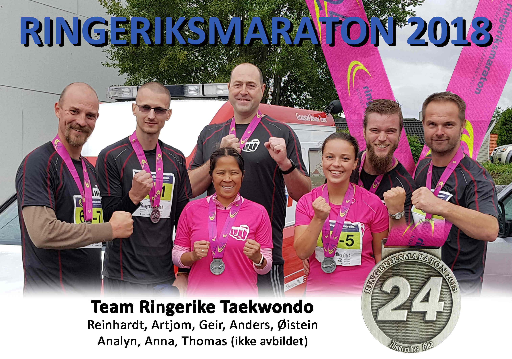

Innlegg
Bra innsats i årets Ringeriksmaraton

I år igjen stilte klubben opp med lag i Ringeriksmaraton. Det ble en gjeng med både kvinner og menn, men som denne gang løp i herreklassen, da antall kvinner på laget ikke kunne rettferdigjøre "Mix" i år. Den totale tiden ble på rett over fire timer, helt nøyaktig 4:00:57. Løpeværet var for de fleste optimalt, med overskyet og behagelig temperatur, selv om noen måtte tåle en liten regnskur. Enkelte på laget var godt fornøyd med egen innsats, mens andre har uttalt store planer om revansj neste år!
Laget besto i år av: Reinhardt, Artjom, Geir, Anders, Øistein, Analyn, Anna og Thomas
Beste snitt-tid pr kilometer var i år på 5:05 og det var det Thomas, som dessverre ikke er avbildet, som stod for.
Etter løpet ble det en velfortjent sosial samling i brukaret med Pizza og væskepåfyll, med god stemning og hvor ingen helt skjønte hvor tiden ble av. Jevnt over et vel gjennomført maraton i år igjen!